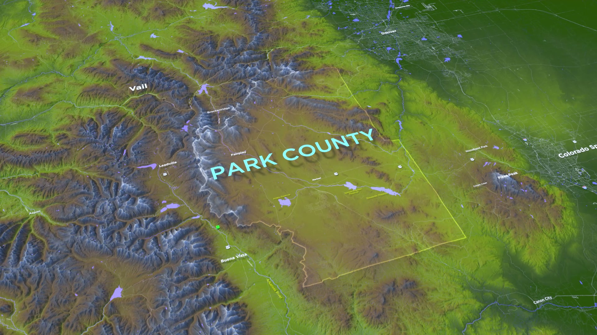

Animated fly-through map sequence for a 2:36 min public information video about the Wild Horse Reservoir project in Park County, Colorado.
Freelance project. Built without After Effects or Blender, Mapbox GL JS programmatic camera path, KML site polygons converted to GeoJSON overlays, Mapbox custom terrain style with green-yellow colour grade matching the original broadcast reference.

The client had a reference video produced in GEOlayers 3 for After Effects, custom terrain colour grade, perspective text labels anchored to the ground plane, smooth camera paths. The brief was to reproduce this without AE or Blender, using only free tools.
Site boundaries from the client's KMZ files were converted to GeoJSON and loaded as fill + line layers in Mapbox GL JS. A programmatic camera path sequences through flyTo calls with matched pitch and bearing to replicate the original framing. Terrain colour was matched via a custom Mapbox style with adjusted hillshade highlight and shadow colours. Frames were captured at 29.97 fps and assembled into the final MP4.